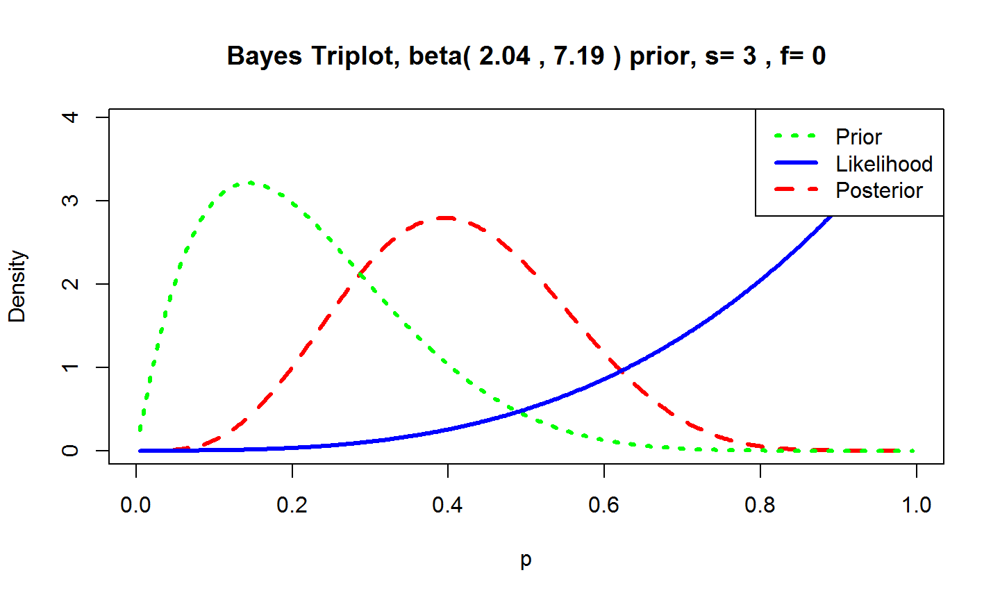
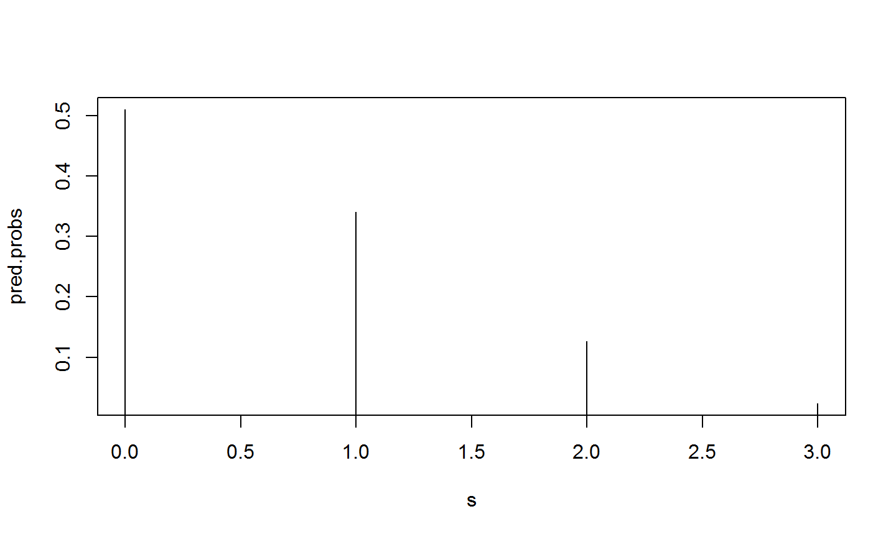

library(LearnBayes)
Suppose we are interested in the response \(p\) of a drug.
The function bayes.select allow for specifying a beta prior based on knowledge of two prior quantiles.
Suppose the prior median for the response rate is 0.2 and the 75th percentile is 0.3.
beta.prior = beta.select(list(p=0.5, x=0.2), list(p=0.75, x=.3)) print(beta.prior)
## [1] 2.04 7.19
A beta(2.04, 7.19) prior matches this prior information
The posterior distribution is…
The triplot function shows the prior, likelihood, and posterior on the same display
beta.prior = beta.select(list(p=0.5, x=0.2), list(p=0.75, x=.3)) triplot(beta.prior, c(3,0))

Inference about the response rate can be carried out by simulating a large number of draws from the posterior and summarizing the simulated sample.
beta.prior = beta.select(list(p=0.5, x=0.2), list(p=0.75, x=.3)) beta.post = beta.prior + c(3,0) post.sample = rbeta(1000, beta.post[1], beta.post[2]) quantile(post.sample, c(0.05, 0.95))
## 5% 95% ## 0.1868793 0.6648908
Suppose we want to predict the number of no adverse events (successes) in the next cohort of 3 patients.
beta.prior = beta.select(list(p=0.5, x=0.2), list(p=0.75, x=.3)) n = 3 s = 0:n pred.probs = pbetap(beta.prior, n, s) discint(cbind(s, pred.probs), 0.95)
## $prob ## [1] 0.9763719 ## ## $set ## [1] 0 1 2

To re-compile the slides:
library(rmarkdown)
render("index.Rmd")